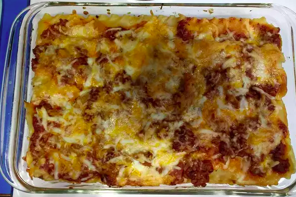

Brenda's Lasagna
Home

Description
This is a faster, and less expensive lasagna.
Ingredients
- 1 pakckage lasagna noodles
- 1 pound lean beef
- salt and pepper to taste
- 1 jar spaghetti sauce
- 1 clove garlic
- 1/2 pound shredded mozzarella cheese
- 1/2 pound shredded cheddar cheese
- 1 pint ricotta cheese
Directions
- Bring a large pot of slightly salted water to a boil. Add pasta and cook for 8 to 10 minutes or until al dente then drain.
- Preheat oven to 350 degrees F (175 degrees C). In a large skillet over medium-high heat, brown beef and season with salt and pepper then drain. Stir in spaghetti sauce and garlic and simmer for 5 minutes.
- In a medium bowl, combine mozzarella, cheddar and ricotta then stir well. In 9x13 inch pan, alternate layers of noodles, meat mixture and cheese mixture until pan is filled.
- Bake in preheated oven for 30 minutes, or until cheese is melted and bubbly.